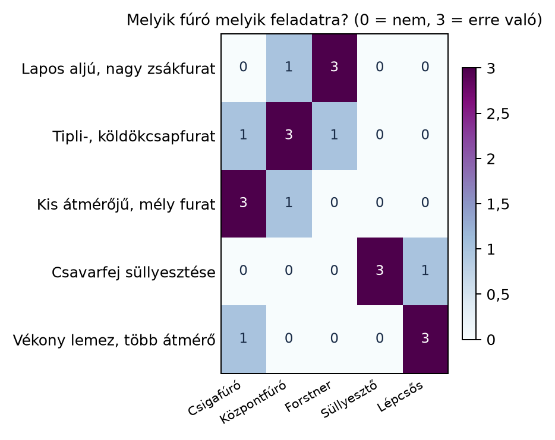

A konyhaszekrény ajtaja megszorul, mert a gyártásból maradt felesleges anyag az élen; polctartó furatokat kell fúrni a korpuszba; a csomagolásból származó csavarokat be kell hajtani. Ilyenkor ugyanaz a tanuló három különböző gépet fog meg: kézi gyalugépet, fúrógépet/csavarozót és oszlopos fúrógépet. Ha nem tudod, melyik szerszámmal, melyik fúróval, mekkora fogással és milyen befogással dolgozz, a munka lassú lesz, a furat ferde, a felület lépcsős, a gép pedig balesetet okozhat.
Az alábbi táblázatos ábra azt mutatja, melyik fúrószerszám melyik furatfeladatra való; a fúrók egymás alternatívái, a feladat dönti el, melyiket fogod meg. A valós választást mindig az anyag, az átmérő, a furat mélysége és a gépkönyv dönti el.

Definíció. A kézi gyalugép motoros meghajtású kéziszerszám, amelynek forgó késtengelyén egy vagy több egyenes kés dolgozik. Az első és hátsó talp magasságkülönbsége határozza meg, hogy a kés egy menetben mennyi anyagot vesz le.
A gép alsó részén két talp van. A hátsó talp a megmunkált, már sík felületen fut. Az első talp a nyers felületen fekszik fel, és magassága állítható. Ha az első talpat kissé feljebb állítod, a kés mélyebben vág. Ezt a kiemelkedést nevezzük fogásmélységnek. A fogásmélységet mindig kis lépésekben állítsd be. Tömörfán, fenyőn egy menetben jellemzően 0,5–1,5 mm fogással dolgozunk, keményfán kisebbel. Ez az érték tájékoztató, a gépkönyv és az anyag dönti el.
Szabály. A kézi gyalugéppel a fogásmélységet csak a gép bekapcsolása előtt, a gépkönyv szerint állítsd be. Először mindig próbadarabon ellenőrizd a beállítást.
A gyalugép falcolásra is használható: egy oldalsó párhuzamvezető szabályozza a falc szélességét, a gép talpán lévő falcmélység-ütköző pedig a falc mélységét. A falcolás során a gép a munkadarab élére támaszkodik, és a kés csak a beállított sávot munkálja meg. Falckészítésnél soha ne akarj egy menetben túl mély falcot vágni. Inkább két-három menetben, fogásmélységet lépésenként növelve dolgozz.
Az interaktív változatban a fogásmélység 0 és 3 mm között állítható: az első talp és a leválasztott réteg vele együtt változik, és a program kiírja, hány menet kell egy adott mélységű falchoz.
A tompa vagy kitört kés roncsolja a felületet, a gép rezeg, a motor melegszik. Késcserekor a gépet áramtalanítani kell, és csak a gépkönyv szerint szabad dolgozni.
Késcsere lépései
Gépbiztonság. A kézi gyalugépet csak betanított, felügyelt tanuló kezelheti. Védőberendezés nélkül, egyedül, fáradtan ne dolgozz. A forgó késtengelyt soha ne közelítsd meg ujjal, ronggyal vagy laza ruházattal. A gépet mindig két kézzel fogd, és várd meg, amíg a késtengely teljesen leáll, mielőtt leteszed; leállás után is csak a parkolótalpára vagy oldalára fektesd. Viselj védőszemüveget és hallásvédőt; csatlakoztass elszívót vagy forgácszsákot, a forgácskivető ne nézzen ember felé. Indítás előtt ellenőrizd: kés rögzítése, talp tisztasága, a kábel a gép mögött fut, a munkadarab be van fogva.
Definíció. A kézi fúrógép motoros hajtású, hordozható fúrógép. Az ütvefúrógép falazatba, téglába való fúráskor ütőművet is bekapcsol. Az akkus fúró-csavarozó fúr és csavaroz, nyomatéka és fordulatszáma több fokozatban állítható, és hálózati kábel nélkül működik.
A fúrógép fő részei: tokmány, fordulatszám-szabályozó kapcsoló, forgásirány-váltó, oldalfogantyú nagyobb gépen, és a fogásgyűrű. Az akkus gépen nyomatékbeállító gyűrű, sebességváltó (kis fokozat: lassú, nagy nyomaték; nagy fokozat: gyors, kisebb nyomaték) és LED-világítás is van.
A tokmány lehet kulcsos tokmány vagy gyorsbefogó tokmány. A gyorsbefogó tokmányt kézzel húzzuk össze; a kulcsos tokmányhoz külön kulcs szükséges. A szerszámot mindig központosan kell befogni: a tokmánypofák egyenletesen fogják a fúró hengeres szárát.
Csavarozó bitek. A csavarhúzó bitek hatlapú (hex) szárral illeszkednek a bitbefogóba. A leggyakoribb bitek: kereszthornyú PH (Phillips) és PZ (Pozidriv), valamint csillag alakú Torx. A megfelelő bitet kell használni: a PZ csavarhoz PZ bit illik, különben a bit kiugrik a fejből, és tönkreteszi a csavart.
Gépbiztonság. Nagy átmérőjű vagy beszoruló fúrónál a gép visszacsavarodhat: használd az oldalfogantyút és kis fordulatszámot; kesztyű nélkül dolgozz; a munkadarabot fogd be. Falfúrás előtt vezetékkeresővel ellenőrizd a vezetékek helyét; viselj védőszemüveget, és a kábelt tartsd távol a fúrótól (ellenőrizendő: gépkönyv).
Szabály. Csavarozáskor először kis fordulatszámot és kis nyomatékfokozatot válassz. Ha a csavar nem húzódik be, inkább ellenőrizd a furat átmérőjét és mélységét, ne emeld azonnal a nyomatékot. A túl nagy nyomaték kicsavarja a csavart vagy besüllyeszti a fejet.
Az asztalos nem egyetlen fúróval dolgozik. A fúró kiválasztása a furat rendeltetésétől, átmérőjétől és mélységétől függ.
| Fúrószerszám | Jellemző alak | Tipikus asztalos feladat | Megjegyzés |
|---|---|---|---|
| Csigafúró | Csavarvonalú horony, hegyes csúcs | Kis átmérőjű, mély átmenő furat, előfúrás csavarhoz | Gyors anyagkihordás, de a kilépésnél kirojtozhatja a fát |
| Központfúró (tiplifúró) | Központhegy, elővágó élek, hengeres test | Tiplihely, köldökcsap furat, vasalatfurat | Pontos, tiszta szélű zsákfurat; lassabb előtolást igényel |
| Forstner fúró | Rövid hengeres fej, körbefutó elővágó él | Nagy átmérőjű, lapos aljú zsákfurat, zsanérhely | Kevésbé hajlamos a kirojtozásra; pontos furat |
| Süllyesztőfúró | Kúpos, gyakran kombinált | Csavarfej süllyesztése a fába | A csavar feje a felület alá kerül |
| Lépcsős fúró | Kúpos, lépcsőzettel | Vékony lemez, több átmérő egymásban | Az asztalosnál ritkább, inkább lemezmegmunkálásnál |
Figyelem. A fúró csak akkor dolgozik jól, ha éles. A tompa fúró a fát égeti, hangosan csikorog, és a furat mérete sem pontos.
Átmenő fúrásnál a fúró teljesen átmegy az anyagon. A kilépő oldalon a fúró kirojtozhatja a fa rostjait. Ezért a munkadarab alá mindig tegyél alátétfát vagy fúrj egy hulladék lapból készített fúróalátétre. A kilépő oldalon a fúró az alátétbe hatol, és a munkadarab széle tiszta marad.
Zsákfuratnál a fúró nem megy át az anyagon. A furat mélységét mélységhatárolóval vagy a gépen beállított ütközővel biztosítjuk. Zsákfuratnál a fúróhegy alakja is számít: a központfúró hegye bemélyed a furat alján, ezért a beállítandó teljes fogásmélység nagyobb, mint a hengeres furatrész mélysége.
Süllyesztésnél a fúrt furat felső szélét kúposra bővítjük, hogy a csavarfej a felület alá kerüljön. Ha a csavart a felület alá akarod rejteni, a süllyesztést először kis átmérővel kezd, és próbadarabon ellenőrizd, hogy a csavarfej éppen a felület alá kerüljön.
Köldökcsap furatnál a furat átmérője a tipli átmérőjével egyezik, a mélység pedig a tipli hosszának felénél valamivel nagyobb. A pontos, merőleges fúrás itt alapkövetelmény, mert a két alkatrész csak így illeszkedik szorosan.
Továbbvitt eredmény. Ez a fúrási pontosság és a zsákfurat-készítés közvetlenül használjuk a köldökcsapozáshoz, a vasalathelyek kialakításához és a szereléshez a Felsőmarógép, lamellózó és marási típusok alfejezetben.
Definíció. Az oszlopos fúrógép állványos, helyhez kötött fúrógép. A munkadarab a magasságállítható asztalon fekszik, a fúró a motoros orsóval függőlegesen mozog. Az oszlopos gép pontosabb és biztonságosabb, mint a kézi fúrógép, de csak akkor, ha a munkadarabot befogod, és a beállításokat elvégzed.
Fő részei: talplemez, oszlop, magasságállítható asztal, orsó, tokmány, mélységhatároló, védőburkolat és kapcsoló. A mélységhatároló ütközője korlátozza az orsó lefelé mozgását, így a zsákfurat mélysége ismételhető.
Beállítás lépései
Gépbiztonság. Az oszlopos fúrógépet csak betanított, felügyelt tanuló kezelheti; védőberendezés nélkül, egyedül, fáradtan ne végezd. Forgó szerszámnál kesztyűt tilos viselni, mert a fúró beakadhat, és a kezet magával rántja. A munkadarabot mindig fogd be; a kicsi, keskeny, vékony vagy hajlott darabot gépsatuval vagy sablonnal rögzítsd. A hosszú hajat kösd össze, ékszert, nyakláncot, laza ruhát ne viselj.
Oszlopos fúrógépen a fúró cseréje közben a gépet áramtalanítsd. A tokmányt csak a géphez adott kulccsal vagy gyorsbefogóval oldd. A fúrót a tokmánypofák közé teljesen ültesd, majd húzd meg. Kulcsos tokmánynál a kulcsot soha ne hagyd a tokmányban: bekapcsoláskor a kulcs kirepülhet.
A kézi fúrógépen a gyorsbefogó tokmányt kézzel húzd össze. Ha a fúró szára csúszik a tokmányban, az azt jelenti, hogy a befogás nem elég erős. Ilyenkor ne húzd meg fogóval a tokmány műanyag gyűrűjét, hanem ellenőrizd a tokmányt és a fúrószárat.
Számítás 1. Egy 8 mm átmérőjű csigafúróval 2500 1/min fordulatszámon dolgozol. Mekkora a fúróél kerületi sebessége?
A forgácsolási sebesség képlete:
ahol a szerszámátmérő mm-ben, a fordulatszám 1/min-ben, pedig m/s-ban.
Behelyettesítve:
Ellenőrzés: 8 mm kerülete kb. 25 mm; másodpercenként kb. 42 fordulat, azaz kb. 1,05 m. Az eredmény reális. Ez az érték tájékoztató, a gépkönyv és a fúró adatlapja szerint ellenőrizendő.
Számítás 2. Központfúróval 18 mm mély hengeres zsákfuratot kell fúrnod. A fúró hegye 2 mm hosszú. Mekkora teljes fogásmélységet állíts be a mélységhatárolón?
A mélységhatároló a fúró teljes útját szabályozza, ezért a hegy hosszát hozzá kell adni a kívánt hengeres furatmélységhez:
Ellenőrzés: ha a fúró 20 mm-t süllyed, a hengeres rész 18 mm mélyen lesz. A beállítást mindig próbadarabon ellenőrizd, mert a fúró hegyhossza a gyártótól és az élezéstől függően kissé eltérhet.
Technológiai lap. Cél: 8 mm átmérőjű, 20 mm teljes mélységű zsákfurat készítése tömörfa alkatrészbe köldökcsapos toldáshoz. Köldökcsap: 8 × 35 mm; a hengeres furatmélység mindkét alkatrészben 18 mm (a furatmélység a csap hosszának felénél valamivel nagyobb, így a csap végén kb. 0,5 mm hézag marad; ellenőrizendő: a csap tényleges hossza).
Anyagok: tömörfa alkatrész, alátétfa, hulladék próbadarab.
Szerszámok és gépek: oszlopos fúrógép, 8 mm-es központfúró, gépsatu vagy leszorító, tolómérő, derékszög, mélységmérő.
Gépbiztonság. A művelet betanított, felügyelt tanulónak szól; védőberendezés nélkül, egyedül, fáradtan ne végezd. Fúrás közben a munkadarabot ne kézzel tartsd, hanem fogd be; a furatmélység beállítása előtt a gép legyen leállítva. Kesztyűt ne viselj.
Indítás előtti ellenőrzés: a fúró éles, a tokmányban jól rögzített, a védőburkolat a helyén van, a mélységhatároló csavarja nem laza, a kapcsoló működik, a munkadarab hibamentes.
A fúrt furatot tolómérővel ellenőrizzük: átmérő, mélység és merőlegesség. A merőlegességet derékszöggel és egy egyenes tüskével vizsgáljuk. A tűrés tájékoztató: átmérőnél ±0,2 mm, mélységnél ±0,5 mm, merőlegességnél 1 mm/100 mm. A kézi gyalugép felületén a fogásnyomok nem lehetnek lépcsősek; a felület legyen sima, a gép nyoma egyenletes. Eltérésnél állítsd be újra a fogásmélységet, élezd vagy cseréld a kést, és próbadarabon ellenőrizd.
Hiba. Az oszlopos fúrógépből kirepül a munkadarab. Oka: a munkadarab nincs befogva, vagy a fúró a ferde felületen megugrik. Helyes gyakorlat: mindig gépsatuval vagy leszorítóval rögzíts; ferde vagy vékony darabot sablonnal támassz alá.
Hiba. A furat alja és széle égett, sötét. Oka: tompa fúró, túl nagy fordulatszám, túl lassú vagy túl erős előtolás. Helyes gyakorlat: élezd vagy cseréld a fúrót, válts kisebb fordulatszámot, és próbadarabon ellenőrizd.
Hiba. A kézi gyalugép lépcsős felületet hagy. Oka: az első és a hátsó talp nincs párhuzamosan beállítva, a kés ferde, vagy a gép a fogásvégén megbillen. Helyes gyakorlat: állítsd be a talpakat, cseréld be a kést pontosan, és a gép talpa a munka végén is teljes felülettel feküdjön fel.
Hiba. A csavarozott csavar kicsúszik a fejéből, a bit ugrál. Oka: rossz bitméret vagy típus (PH helyett PZ), kopott bit. Helyes gyakorlat: használd a csavarhoz illő, nem kopott bitet, és a csavarozót tengelyirányban tartsd.
A tanműhelyben a tanuló polctartó furatokat fúrt oszlopos fúrógéppel egy 18 mm vastag bútorlapba. A mélységhatárolót nem állította be, és a fúró átment a lapon. Az alkatrész elöl-hátul átfúródott, javíthatatlan lett, a darabot újra kellett szabni. A hiba oka a mélységhatároló hiánya és a próbafurat elhagyása volt. A tanulság: zsákfuratnál mindig állíts be mélységhatárolót, és először próbadarabon fúrj. Ezzel a köldökcsapos és vasalatfuratok is pontosan készíthetők.
1. feladat (A). Igaz vagy hamis? a) Az akkus fúró-csavarozó nyomatékbeállítóját a legnagyobb fokozatra kell állítani minden csavarozásnál. b) A kézi gyalugép késtengelyét a kés cseréje előtt érdemes forgatni, hogy könnyebben hozzáférjünk. Válaszod indokold.
2. feladat (A). Nevezd meg, milyen fúrószerszámot választanál 6 mm-es tiplihely készítéséhez, és miért.
3. feladat (B). Számítsd ki, mekkora teljes fogásmélységet állíts be a mélységhatárolón, ha a központfúró hegye 3 mm, és a kívánt hengeres furatmélység 23 mm.
4. feladat (B). Egy 12 mm-es Forstner fúróval 1500 1/min fordulatszámon fúrsz. Számold ki a kerületi sebességet. Hogyan változtass a fordulatszámon, ha a fa égeti a furatot?
5. feladat (C). Az oszlopos fúrógépen a fúrt zsákfurat ferde, és a kilépő oldalon kirojtozódott a fa. A munkadarab a gépasztalon billeg. Milyen hibákat gyanítasz, és mi a helyes megoldás?
6. feladat (D). Készíts technológiai leírást 8 mm-es köldökcsap furatok készítéséhez két tömörfa alkatrészbe oszlopos fúrógéppel. Add meg a szerszámokat, a beállítási adatokat, az ellenőrzési pontokat és a biztonsági szabályokat.
v = 10 * π * 2000 / 60000 = 1,05 m/s.1. feladat (A). a) Hamis. A nyomatékot az anyaghoz és a csavarhoz illően kell beállítani; túl nagy nyomaték tönkreteszi a csavart vagy besüllyeszti a fejet. b) Hamis. Késcsere előtt a gépet áramtalanítani kell, a késtengelyt reteszelni kell, és csak ezután szabad a csavarokat oldani.
2. feladat (A). Központfúrót (tiplifúró), mert 6 mm-es tiplihelyhez pontos, tiszta szélű, hengeres zsákfurat kell, és a központfúró központhegye megvezeti a fúrót.
3. feladat (B).
Adott: hengeres mélység 23 mm, hegyhossz 3 mm.
Képlet: M_össz = 23 + 3 = 26 mm.
Ellenőrzés: a hengeres rész 23 mm mély lesz, a hegy 3 mm-rel mélyebbre hatol. A beállítás után próbadarabon ellenőrizd mérőeszközzel.
4. feladat (B).
Adott: D = 12 mm, n = 1500 1/min.
Képlet: v = (D * π * n) / 60000.
Behelyettesítés:
v = (12 * π * 1500) / 60000 = 0,94 m/s.
Ha a fa ég, élezd vagy cseréld a fúrót, csökkentsd a fordulatszámot, és ne állj meg a furat alján; egyenletes, folyamatos előtolással dolgozz, és gyakran emeld ki a fúrót a forgács eltávolítására (az égés oka a túl kicsi előtolás és a dörzsölés, lásd a Forgácsolási és előtoló sebesség, fogankénti előtolás alfejezetet).
5. feladat (C). A ferde furat oka lehet, hogy a munkadarab nincs befogva, vagy az asztal nincs merőleges az orsóra. A kirojtozódás oka, hogy a fúró kilépésénél nincs alátétfa, vagy a fúró tompa. Helyes megoldás: fogd be a munkadarabot gépsatuval, ellenőrizd az asztal merőlegességét, használj alátétfát vagy éles fúrót, és próbadarabon ellenőrizd.
6. feladat (D). A technológiai leírás hasonló a fejezet Technológiai lapjához. Szerszámok: oszlopos fúrógép, 8 mm-es központfúró, gépsatu, tolómérő, derékszög, mélységmérő. Beállítás: a fúró 8 mm, a mélységhatároló 20 mm teljes fogásra, ha a hegy 2 mm és a hengeres mélység 18 mm. Ellenőrzés: furatátmérő, mélység, merőlegesség, tiszta szél. Biztonság: befogott munkadarab, kesztyű tilos, a fúró forgása közben a kezet távol tartani, a gép leállítása után ellenőrizni.
A kézi gyalugép forgó késtengellyel, az első talp magasságkülönbségével beállított fogásmélységgel dolgozik. Falcoláshoz párhuzamvezetőt és falcmélység-ütközőt használunk. A késcsere csak áramtalanítás, a tengely reteszelése és a gépkönyv szerint végezhető. A kézi fúrógép és az akkus fúró-csavarozó tokmánnyal fogja be a szerszámot; a csavarozónál a fordulatszám és a nyomaték fokozatokkal állítható. A fúrószerszámot a furatfeladathoz választjuk: csigafúró mély furathoz, központfúró tipli- és köldökcsaphelyhez, Forstner nagy átmérőjű zsákfurathoz, süllyesztő csavarfejhez. Az oszlopos fúrógéppel a munkadarabot mindig be kell fogni; a mélységhatárolóval pontos zsákfurat készíthető. Forgó szerszámnál kesztyűt tilos viselni. A furatmélységet a hegy hosszának beszámításával állítjuk be. Ezt a fúrási pontosságot használjuk fel a köldökcsapozáshoz, vasalathelyekhez és a szereléshez a Felsőmarógép, lamellózó és marási típusok alfejezetben.